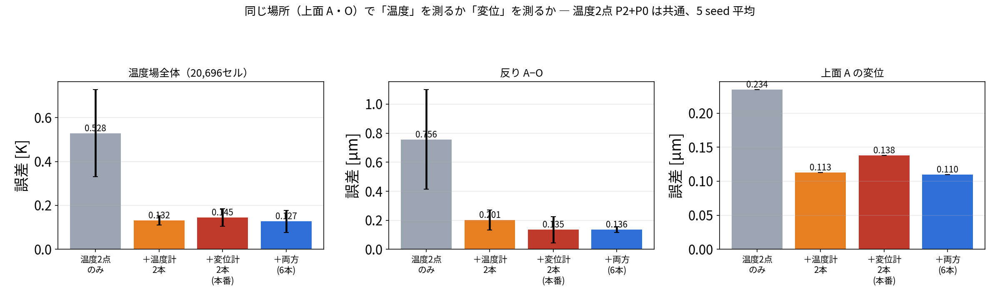
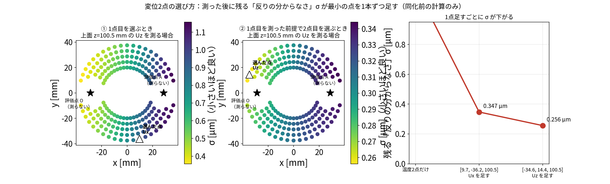
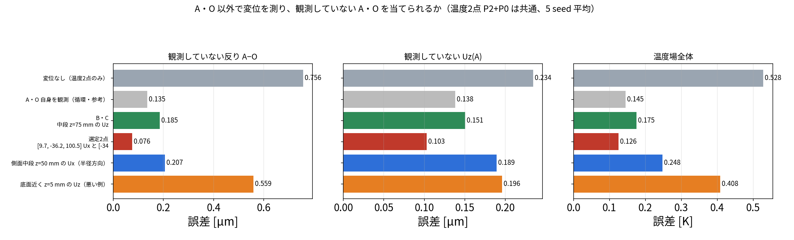
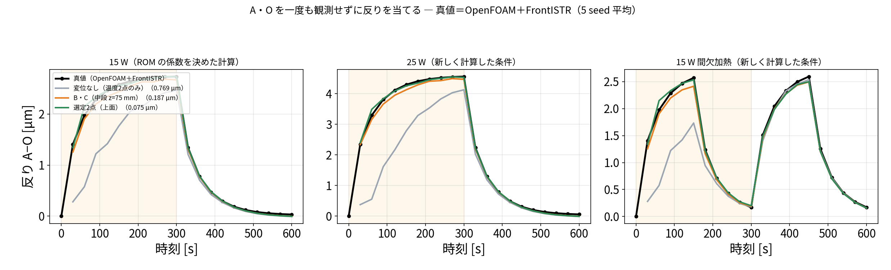
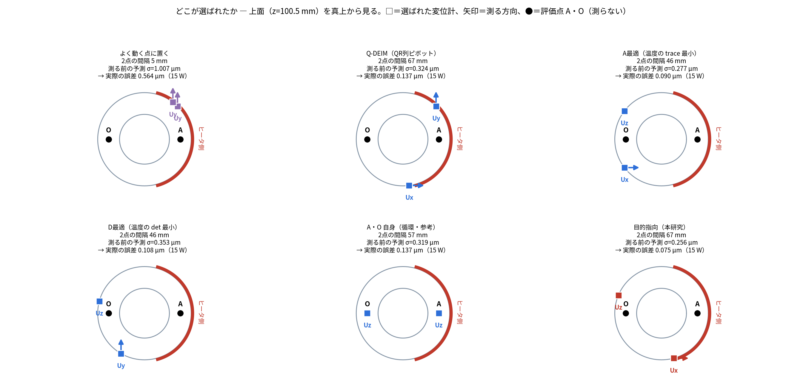
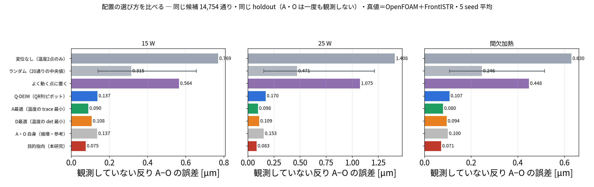

更新日：2026-10-03
これまでの記事で、温度2点に変位2点を足すと推定が良くなることを示してきました。 この記事は、それが研究の主張として成り立つのかを、先行研究を調べたうえで整理したものです。
この記事は、本研究の「主張」と「先行研究との関係」をまとめた記事です。 計算の中身は blog_006（同化の手順）、 blog_007（ROM の適用範囲）にあります。 工作機械の研究全体の中でどこに位置するかは §6 です。
blog_006〜008 の役割分担
記事 扱うこと 真値 blog_006 同化の手順。温度2点＋変位2点をどう使い、なぜ発熱量が直るか ROM の双子実験 blog_007 ROM の適用範囲。条件が変わっても使えるか OpenFOAM＋FrontISTR blog_008 主張と先行研究。研究としてどこが新しいか ROM の双子実験 数値は重複を避け、各記事が担当する検証だけを載せています。
| 内容 | |
|---|---|
| 確かめたいこと | 「温度だけでなく変位も観測としてデータ同化に入れる」ことが、研究の主張として成り立つか。先行研究にないか、そして実際に効果があるか |
| 検証1（§4） | 同じ場所に温度計を置くか変位計を置くかで差が出るか。センサの本数（4本）と場所をそろえ、測る量だけを変える |
| 検証2（§5） | 評価点 A・O を一度も観測せず、別の場所の変位2点だけで A・O の変形を当てられるか（blog_004 §7-4 の循環を断つ） |
| 真値（正解） | ROM で作った模擬データ（双子実験）。実機ではありません |
| 共通の観測 | 温度2点（P2・P0）。ここに変位2点を足したり、場所を変えたりする |
| ノイズ | 温度 0.30 K、変位 0.30 µm |
| 同化の設定 | EnKF・60メンバー・30 秒ごと20回・seed 20260913〜17 の5回平均 |
| 評価 | 加熱期 30〜300 秒の平均。全 20,696 セルの温度、反り \(U_z(A)-U_z(O)\) 、個別の \(U_z(A)\) ・ \(U_z(O)\) |
| 文献調査の範囲 | 2026-10-03 に英語5回・日本語1回の検索。網羅的ではありません（§3） |
この記事の結論 1. 工作機械の熱変形補正では、温度を観測して変位を推定するか、変位を直接測って補正するかのどちらかが一般的。 2. 温度と変位を同時に観測としてデータ同化に入れ、温度場・発熱量まで推定した例は、調べた範囲では見当たらない。 3. 手法そのもの（EnKF、POD、変位の同化）は既知。新しいのは組み合わせ方と、工作機械の熱変形に適用した点。 4. 同じ場所なら、温度計と変位計はほぼ互角だった（§4）。変位計の価値は「情報量が多いこと」ではなく、温度計を置けない場所に置けること。 5. 別の場所で変位を測れば、一度も測っていない場所の変形を、直接測るより正確に当てられた（0.076 µm 対 0.135 µm、§5）。
熱変形を推定したいとき、観測は温度だけでなく、変位も同化に入れたほうがよい。 変位計は5点すべての温度に触れるので、温度計のない点の温度まで直り、結果として温度場も発熱量も熱変形も良くなる。 そして変位計は、知りたい場所に置く必要がない。別の場所で測って、測っていない場所の変形を当てられる。
この主張を支える計算結果と、先行研究との関係を以下にまとめます。
この記事は主張と位置づけを扱います。計算の中身はそれぞれの記事にあるので、ここでは一覧だけ示します。
| 主張を支える事実 | 数値 | どの記事に |
|---|---|---|
| 変位は5点の温度の足し算なので、変位計1本が5点すべてに触れる | 熱感度 \(W\) の行が全点に非ゼロ | blog_006 §7-1 |
| 温度計のない点の温度が、変位計だけで直る | \(t=30\) 秒で P3 を −4.97 K、P4 を −7.67 K | blog_006 §7-5b |
| 温度計のずれが 0 になった後も、変位計だけが温度場を直す | \(t=150\) 秒で温度の寄与 0.000 K | 同上 |
| 変位を足すと温度も発熱量も当たる | 温度場 0.503 → 0.160 K、 \(Q\) 14.05 → 14.89 W（真値 15 W） | blog_004 §7-6、blog_006 §15 |
| 係数を決めていない条件でも成立（実ソルバ真値） | 25 W で反り 0.74 → 0.09 µm、発熱量 24.91 W（真値 25 W） | blog_007、21 |
| ROM は条件が変わっても使える | 25 W・間欠加熱とも全セルがノイズ 0.3 K 未満 | blog_007 §6 |
| 配置の選び方が既存法より良い | 目的指向 0.075 対 A最適 0.090・D最適 0.108・Q-DEIM 0.137 µm（15 W） | §5【追加】配置法の比較 |
この記事で新しく行った検証は §5・§6 の2つです。
| 検証 | 知りたいこと |
|---|---|
| §5 | 同じ場所に温度計を置いたらどうなるか（変位計は本当に有利か） |
| §6 | A・O を一度も測らずに、別の場所の変位2点で当てられるか |
2026-10-03 に、英語5回・日本語1回の検索を行いました。網羅的な調査ではありません。
| 研究 | 手法 | 観測に使うもの | 変位の扱い |
|---|---|---|---|
| ETH Zurich (2024) | カルマンフィルタ＋低次元化FEM | 温度のみ（5軸機で25本中13本） | 推定結果（出力） |
| Teshima et al. (2024) CIRP JMST | ROM＋回帰、センサ配置指針 | 温度のみ | 出力 |
| Tekniker | 状態空間＋カルマンフィルタ | 主軸回転数・温度 | 出力 |
| NIST の整理 | 直接法／間接法の分類 | 温度（間接法）または変位（直接法） | 直接法は変位を測って直接補正。状態推定はしない |
| 逆熱伝導問題（EKF） | 拡張カルマンフィルタ | 温度のみ | ― |
| Displacement Data Assimilation | EnKF | 変位のみ（流体分野） | 観測として使用 |
| 日本（特許・論文） | 回帰・CNN・多点温度計測（302点） | 温度のみ | 出力 |
| 項目 | ETH Zurich (2024) | 本研究 |
|---|---|---|
| モデル | 低次元化した FEM | POD/Q-DEIM の ROM |
| 同化 | カルマンフィルタ | EnKF |
| 観測 | 温度のみ（25本中13本） | 温度2本＋変位2本 |
| 推定するもの | 温度場 → 熱変位 | 温度場・熱変形・発熱量 |
| 結果 | 未観測温度 RMSE 2.7 ℃、熱変位 67.4 → 33.3 µm（実機） | 温度場 0.16 K、未観測の反り 0.081 µm（計算で作った真値） |
| 実装 | 非公開 | オープンソースで公開 |
手法の枠組みはほぼ同じです。 違いは「観測に変位を入れたか」「発熱量まで推定するか」「実装が公開されているか」です。 ただし ETH は実機で検証しており、本研究は計算で作った真値だけです。ここは明確に劣ります。
この節で知りたいこと：「変位計は5点すべての温度に触れるから有利」は本当か。同じ場所に温度計を置いたらどうなるか
条件：センサの本数（計4本）と場所をそろえ、測る量だけを変える。温度2点（P2・P0）は共通、A・O に温度計2本 or 変位計2本。真値＝ROM の双子実験、EnKF・5 seed・加熱期 30〜300 秒
「変位計のほうが情報量が多いから良い」のかを確かめるため、同じ場所に温度計を置いた場合と比べました。
センサの本数（計4本）と場所をそろえ、変えるのは「そこで何を測るか」だけです（run/disp_vs_temp_same_place.py）。
| 記号 | 座標 [mm] | 何を測るか |
|---|---|---|
| P2 | (36.5, 6.9, 50.8) ヒータ側・中段 | 温度（4構成すべて共通） |
| P0 | (21.3, −1.6, 51.6) 同じヒータ側・中段 | 温度（4構成すべて共通） |
| A | (28.7, 0, 100.5) 上面・ヒータ側 | 構成により 温度 または 変位 \(U_z\) |
| O | (−28.7, 0, 100.5) 上面・反対側 | 同上 |
4つの構成は次のとおりです。
| 構成 | 観測の中身 | 本数 |
|---|---|---|
| 温度2点のみ | 温度 P2・P0 | 2 |
| ＋A/O に温度計2本 | 温度 P2・P0・A・O（計4点とも温度） | 4 |
| ＋A/O に変位計2本（本番） | 温度 P2・P0 ＋ 変位 A・O の \(U_z\) | 4 |
| ＋両方 | 温度 P2・P0・A・O ＋ 変位 A・O | 6 |

| 観測（温度2点 P2＋P0 は共通） | 温度場全体 | 反り A−O | Uz(A) | Uz(O) |
|---|---|---|---|---|
| 温度2点のみ | 0.528 K | 0.756 µm | 0.234 µm | 0.922 µm |
| ＋ A/O に温度計2本 | 0.132 K | 0.201 µm | 0.113 µm | 0.154 µm |
| ＋ A/O に変位計2本（本番） | 0.145 K | 0.135 µm | 0.138 µm | 0.104 µm |
| ＋ 両方（計6本） | 0.127 K | 0.136 µm | 0.110 µm | 0.117 µm |
seed ごとに対応をとった勝敗（変位計が温度計より良かった回数、5回中）：
| 評価する量 | 変位計が良かった回数 |
|---|---|
| 温度場全体 | 2 / 5 |
| 反り A−O | 4 / 5 |
| Uz(A) | 0 / 5 |
| Uz(O) | 5 / 5 |
したがって「変位計は情報量が多いから優れている」とは言えません。 変位計の価値は、温度計を置けない場所に置けることにあります。 工作機械では、加工中の工具先端や内部に熱電対を入れられませんが、変位計なら外側から測れます。
この節で分かったこと - 同じ場所なら、温度計と変位計はほぼ互角。温度場全体では温度計がわずかに良い（0.132 対 0.145 K、差は seed のばらつき内）。 - 反りを当てるなら変位計が良い（0.135 対 0.201 µm、5 seed 中4回）。知りたい量を直接測っているため。 - よって「変位計は情報量が多いから優れている」とは言えない。 - 変位計の価値は、温度計を置けない場所に置けることにある（加工中の工具先端に熱電対は入れられない）。
この節で知りたいこと：評価点 A・O を一度も観測せずに、別の場所の変位2点だけで A・O の変形を当てられるか。変位計はどこに置けばよいか
条件：温度2点（P2・P0）は共通。変位の候補は全 5,040 節点 × 3 方向＝15,120 通り（A・O から 12 mm 以内は除外）。真値＝ROM の双子実験、EnKF・5 seed・加熱期 30〜300 秒
blog_004 §7-4
の構成は、評価している A・O をそのまま観測に使っていました（循環）。
そこで、A・O を一度も観測せず、別の場所の変位2点だけで
A・O
を当てられるかを調べました（run/disp_elsewhere_predict_AO.py）。
赤＝温度センサ（P2・P0）／緑＝選定した変位2点（矢印＝測る方向）／橙＝B・C／黒＝評価点 A・O。 A・O は一度も観測していません。
| 役割 | 場所 | 測るもの |
|---|---|---|
| 温度センサ（共通） | P2 (36.5, 6.9, 50.8)、P0 (21.3, −1.6, 51.6) mm | 温度 |
| 選定した変位1点目 | (9.7, −36.2, 100.5) mm（上面、−y 寄り） | \(U_x\) （半径方向） |
| 選定した変位2点目 | (−34.6, 14.4, 100.5) mm（上面、ヒータの反対側） | \(U_z\) （上下方向） |
| B・C（比較用） | (±28, 0, 75) mm（A・O の真下、25 mm 下） | \(U_z\) |
| 評価点 A・O | (±28.7, 0, 100.5) mm（上面） | 測らない |
やったことは総当たりです。難しいことはしていません。
FrontISTR を6回だけ回しました（平均の温度場で1回、POD のモード5つで1回ずつ）。 FEM は1回解くと全節点の変位が出るので、この6回で
全 5,040 節点 × 3 方向（x, y, z）＝ 15,120 通り
すべてについて「5点の温度が変わると、その点のその方向の変位がどれだけ動くか」が分かります。追加の FEM 計算は要りません。
A・O から 12 mm 以内の節点は「A・O を測ったのと同じ」になるので候補から外し、14,754 通りが残りました。
候補を1つ取り出して、こう問います。
「ここに変位計を1本置いたら、反り A−O はどれくらい『はっきり』するか」
この「はっきり度」を数値で出します。単位は µm で、小さいほど良いです。この記事では \(\sigma\) と書きます。
| 状態 | \(\sigma\) の意味 |
|---|---|
| 温度2点だけ（変位なし） | 1.186 µm。反りの振幅が 2.74 µm なので、半分近く分かっていない |
| ある候補を1本足したあと | その候補を測ると、どこまで絞り込めるか |
これを 14,754 通りすべてについて計算します。表計算で全行に式を入れて、最小値を探すのと同じことです。
採点に使うのは次の2つだけで、測定値は使いません。
| 使うもの | 中身 | どこから |
|---|---|---|
| 熱感度 | 5点の温度が 1 K 変わると、その点の変位が何 µm 動くか | FrontISTR（ステップ1で作ったもの） |
| 温度のばらつき | 発熱量や初期温度が分からないせいで、5点の温度がどれくらい・どう連動してばらつくか | ROM を 4000 通り回して数える |
\[\sigma_S^2=w^{\mathsf T}\Big(B-BH_S^{\mathsf T}(H_SBH_S^{\mathsf T}+R)^{-1}H_SB\Big)w\]
\(w\) ＝反り A−O に対する5点温度の熱感度 (0.47, −0.65, 0.60, 0.04, −0.46) µm/K、 \(B\) ＝5点の温度のばらつき（共分散）、 \(H_S\) ＝候補 \(S\) を測る演算子、 \(R\) ＝センサのノイズ（0.3 µm）。 括弧の中はカルマンフィルタの更新式そのもので、「測った後に残る温度のあいまいさ」です。 それを \(w\) ではさむと「残る反りのあいまいさ」になります。
14,754 通りの採点結果を小さい順に並べます。
| 順位 | 候補 | \(\sigma\) |
|---|---|---|
| 1位 | (9.7, −36.2, 100.5) mm の \(U_x\) | 0.347 µm |
| 2位 | (9.7, +36.2, 100.5) mm の \(U_x\) | 0.347 µm |
| 3位 | (14.4, −34.6, 100.5) mm の \(U_x\) | 0.347 µm |
| …（中央値） | ― | 1.026 µm |
| 最下位 | (37.5, 0, 0) mm の \(U_y\) | 1.186 µm ＝ 測らないのと同じ |
1位を採用します。これで 1.186 → 0.347 µm。1本測るだけで3分の1以下になりました。
ここが肝心です。2位をそのまま選んではいけません。
2位は (9.7, +36.2, 100.5) で、1位とは y の符号が違うだけのほぼ同じ場所です。 1点目で分かったことと同じことしか分からないので、足しても意味がありません。
そこで、1点目を測ったことにして、14,753 通りを採点し直します。
| 順位 | 候補 | \(\sigma\) |
|---|---|---|
| 1位 | (−34.6, 14.4, 100.5) mm の \(U_z\) | 0.256 µm |
| 2位 | (−36.2, 9.7, 100.5) mm の \(U_z\) | 0.256 µm |
| …（中央値） | ― | 0.330 µm |
0.347 → 0.256 µm。これで2点決まりました。

左＝1点目を選ぶときの採点（色が薄いほど良い）、中＝1点目を測った前提で採点し直したとき、右＝ \(\sigma\) が下がる様子。
左と中を見比べてください。良い場所（薄い色）が移動しています。
| 良い場所 | なぜ | |
|---|---|---|
| 1点目のとき | 上面の ±y 側 | ヒータ側と反対側の両方の影響を受ける |
| 2点目のとき | ヒータの反対側（−x 側） | 1点目で分からなかった「反対側の情報」が欲しくなる |
やったこと：候補 14,754 通りを全部採点して1位を選ぶ。選んだら採点をやり直して、また1位を選ぶ。
考え方：いま分かっていないことを、いちばん多く教えてくれる点を選ぶ。選んだら「何が分かっていないか」を更新して、また選ぶ。
ここまで測定値は一切使っていません。 FrontISTR の計算と ROM の計算だけで、机上で場所が決まります。 本当に当たるかは、このあと同化を回して確かめます。

| 変位2点をどこに置くか | 観測していない反り A−O | 観測していない Uz(A) | 温度場全体 |
|---|---|---|---|
| 変位なし（温度2点のみ） | 0.756 µm | 0.234 µm | 0.528 K |
| A・O 自身を観測（循環・参考） | 0.135 µm | 0.138 µm | 0.145 K |
| B・C（中段 z=75 mm の \(U_z\) ） | 0.185 µm | 0.151 µm | 0.175 K |
| 選定2点（(9.7, −36.2, 100.5) の \(U_x\) と (−34.6, 14.4, 100.5) の \(U_z\) ） | 0.076 µm | 0.103 µm | 0.126 K |
| 側面中段 z=50 mm の \(U_x\) | 0.207 µm | 0.189 µm | 0.248 K |
| 底面近く z=5 mm の \(U_z\) （悪い例） | 0.559 µm | 0.196 µm | 0.408 K |

左＝真値、中＝温度2点だけ、右＝温度2点＋変位2点（A・O は一度も測らない）。 色＝温度、形＝熱変形（約4,000倍に誇張）。
| 印 | 意味 |
|---|---|
| ●赤い球 | 温度センサ（P2・P0。3枚とも共通） |
| ■緑の立方体 | 変位計（右のパネルにだけ現れる。選定した2点） |
| ●黒い球 | 評価点 A・O（一度も測らない。3枚とも共通） |
（seed 20260913）
形と色で、何が起きているか一目で分かります。例えば \(t=150\) 秒では
| 反り A−O | 誤差 | |
|---|---|---|
| 真値 | 2.57 µm | ― |
| 温度2点のみ（中） | 1.38 µm | 1.19 µm |
| 温度2点＋別の場所の変位2点（右） | 2.56 µm | 0.01 µm |
これが本研究のいちばん強い結果だと考えています。 工作機械で本当に知りたいのは工具先端の変位ですが、加工中にそこは測れません。 測れる場所で変位を測り、測れない場所の変形を当てることを、計算で示せました。
上の結果は真値も ROM の双子実験でした。真値を
OpenFOAM＋FrontISTR にして同じ試験をやり直しました
（run/holdout_AO_realsolver.py）。

黒＝真値（OpenFOAM＋FrontISTR）、灰＝変位なし、橙＝B・C、緑＝選定2点。5 seed 平均。
反り A−O の誤差 [µm]（加熱期 30〜300 秒の平均）
| 変位2点をどこに置くか | 15 W | 25 W | 間欠加熱 |
|---|---|---|---|
| 変位なし（温度2点のみ） | 0.769 | 1.408 | 0.630 |
| A・O 自身を観測（循環・参考） | 0.137 | 0.153 | 0.100 |
| B・C（中段 z=75 mm） | 0.187 | 0.193 | 0.143 |
| 選定2点（上面） | 0.075 | 0.083 | 0.071 |
| 底面近く z=5 mm（悪い例） | 0.581 | 1.096 | 0.480 |
ROM 真値のときと同じ結論が、実ソルバ真値でも得られました。
これで切り口B（測れない場所を、測れる場所から当てる）が、実ソルバ真値でも裏づけられました。
変位計をどこに置くか決める方法を6通り用意し、決め方だけを変えて、ほかの条件は全部そろえて比べました。
| なぜやったか | 前の節は「選定2点」と「底面近く（悪い例）」を比べただけで、選び方そのものが良いという証拠になっていなかった |
| 何をしたか | 同じ候補 14,754 通りに6つの決め方を適用し、同じ holdout 試験（A・O を一度も観測しない）にかけた |
| 比べた相手 | 無作為配置／「よく動く点に置く」／Q-DEIM／A最適／D最適（後ろ3つは教科書的な方法） |
| 真値 | OpenFOAM＋FrontISTR。15 W・25 W・間欠加熱の3条件 × 5 seed |
| 何が得られたか | 本研究の決め方が3条件とも最小（0.075／0.083／0.071 µm）。ただし2位の A最適（0.090 µm）との差は 15〜20 % |
| いちばんの収穫 | 「温度場全体を良く知る配置」と「反りを良く知る配置」は別物だと示せたこと。そして「よく動く点に置く」は無作為より悪いこと |
| 何をするか | そこで何が分かるか | |
|---|---|---|
| ステップ0 | ここまでの比較の弱点を確認する | 「良い点と悪い点を比べただけ」だと分かる |
| ステップ1 | 土俵をそろえる（候補・本数・試験・真値・乱数） | 変えるのは決め方だけになる |
| ステップ2 | 比べる6つの決め方を並べ、何を小さくしようとしているかで分類する | 比較の軸は「温度場を狙うか反りを狙うか」だと分かる |
| ステップ3 | 同化を回す前に、選ばれた場所を図で見る | 「よく動く点に置く」は2点が 5 mm しか離れないと分かる |
| ステップ4 | 選ばれた2点それぞれで holdout 試験を回す | 誤差の順位が出る |
| 分かったこと | ①〜⑥として整理する | 上の「何が得られたか」の中身 |
前の節で比べたのは、この4つでした。
| 比べた相手 | 反り A−O の誤差（15 W） |
|---|---|
| 変位なし | 0.769 µm |
| A・O 自身を測る | 0.137 µm |
| B・C（A・O の真下） | 0.187 µm |
| 選定2点 | 0.075 µm |
| 底面近く（悪い例） | 0.581 µm |
これで言えるのは「選んだ点は、適当に決めた点より良かった」だけです。 底面近くは固定端でほとんど動かないので、負けて当たり前です。
本当に知りたいのは「σ を最小化するという選び方そのものが良いのか」です。 センサ配置の決め方には教科書的な方法がいくつもあります。それらと比べて初めて、 「この選び方が効いている」と言えます。
そこで、選び方だけを変えて、ほかは全部同じにした比較を行いました。
比べるときに変えてよいのは「選び方」だけです。それ以外は全部そろえます。
| そろえるもの | 中身 |
|---|---|
| 候補集合 | 全 5,040 節点 × 3 方向のうち、A・O から 12 mm 以上離れた 14,754 通り（全手法で共通） |
| 使う情報 | FrontISTR の熱感度 \(W\) と、ROM を 4,000 通り回して作った温度のばらつき \(B\) だけ。測定値は使わない |
| センサの本数 | 温度2点（P2・P0）＋ 変位2点（全手法で共通） |
| 試験 | A・O を一度も観測しない holdout。同化は EnKF・60 メンバー・30 秒ごと |
| 真値 | OpenFOAM の温度場 ＋ それを FrontISTR に入れた全節点変位。15 W／25 W／間欠加熱の3条件 |
| 乱数 | 同じ 5 seed |
「何を小さくしようとしているか」で分類すると、次の6つになります。
| 選び方 | 何を小さくするか | 狙っている対象 |
|---|---|---|
| ランダム | ― （20 通りの無作為な2点） | ― （下限の目安） |
| よく動く点に置く | ― 温度が変わったとき変位がいちばん大きく動く点 | ― |
| Q-DEIM（QR 列ピボット） | モード行列の条件数 | 温度場（モード係数） |
| A最適 | 温度5点の事後共分散の trace | 温度場全体 |
| D最適 | 温度5点の事後共分散の det | 温度場全体 |
| 目的指向（本研究） | \(\sigma_S^2=w^{\mathsf T}(\cdots)w\) | 反り A−O |
A最適・D最適は実験計画法の教科書に出てくる基準です。Q-DEIM は ROM の分野で標準的な点の選び方で、 blog_004 §4 で ROM の代表5点を選んだのと同じ方法です。
比較の軸はここです。 A最適・D最適・Q-DEIM は「温度場をいちばん良く知る配置」を選びます。 本研究だけが「反り A−O をいちばん良く知る配置」を選びます（ \(w\) で目的を指定しているため）。
温度場を良く知れば、反りも良く分かるはずだ ― これが正しいなら、A最適と本研究は同じ答えになるはずです。 違う答えになるなら、「目的を指定すること」に意味があることになります。
同化を回す前に、選ばれた場所そのものを見ます。選定はすべて机上の計算だけで終わっています。

上面（z=100.5 mm）を真上から見た図。□＝選ばれた変位計、矢印＝測る方向（ \(U_z\) は紙面に垂直なので矢印なし）、 ●＝評価点 A・O（測らない）、赤い弧＝ヒータ側。
| 選び方 | 1点目 | 2点目 | 2点の間隔 | 測る前の予測 \(\sigma\) |
|---|---|---|---|---|
| よく動く点に置く | (26.5, 26.5) \(U_y\) | (22.8, 29.8) \(U_y\) | 5.0 mm | 1.007 µm |
| Q-DEIM | (26.5, 26.5) \(U_y\) | (4.9, −37.2) \(U_x\) | 67.3 mm | 0.324 µm |
| A最適 | (−29.8, 22.8) \(U_z\) | (−29.8, −22.8) \(U_x\) | 45.6 mm | 0.277 µm |
| D最適 | (−36.2, 9.7) \(U_z\) | (−18.8, −32.5) \(U_y\) | 45.6 mm | 0.353 µm |
| A・O 自身（循環・参考） | (28.7, 0) \(U_z\) | (−28.7, 0) \(U_z\) | 57.4 mm | 0.319 µm |
| 目的指向（本研究） | (9.7, −36.2) \(U_x\) | (−34.6, 14.4) \(U_z\) | 67.3 mm | 0.256 µm |
座標は mm、上面なので z は省略しています。
この時点で2つ分かります。
(1) 「よく動く点に置く」は、2点が 5 mm しか離れていません。 左上のパネルで、2つの□がほとんど重なっているのが見えます。 「よく動く点」は上面の特定の向きに固まって存在するので、単純に上位2つを採ると ほとんど同じ場所を2回測ることになります。 §5 ステップ4 で 「2位をそのまま選んではいけない」と書いたのは、まさにこれです。
(2) 式は「A・O を直接測るのは最善ではない」と、同化を回す前に言っています。 A・O 自身を測る構成の予測は 0.319 µm で、目的指向の 0.256 µm より大きい。 §5 の「直接測るより正確」という結果は、 測定の前に式が予言していたことになります。
選ばれた2点それぞれで、A・O を一度も観測しない holdout を回します。

観測していない反り A−O の誤差 [µm]（加熱期 30〜300 秒の平均、5 seed）
| 選び方 | 15 W | 25 W | 間欠加熱 |
|---|---|---|---|
| 変位なし（温度2点のみ） | 0.769 | 1.408 | 0.630 |
| ランダム（20 通りの中央値） | 0.315 | 0.471 | 0.246 |
| よく動く点に置く | 0.564 | 1.075 | 0.448 |
| Q-DEIM（QR 列ピボット） | 0.137 | 0.170 | 0.107 |
| D最適（det 最小） | 0.108 | 0.109 | 0.094 |
| A最適（trace 最小） | 0.090 | 0.098 | 0.080 |
| A・O 自身を観測（循環・参考） | 0.137 | 0.153 | 0.100 |
| 目的指向（本研究） | 0.075 | 0.083 | 0.071 |
ランダムの散らばり（20 通り）：15 W で最良 0.140 / 最悪 0.655、25 W で最良 0.153 / 最悪 1.213 µm。
① 「温度場を良く知れば反りも分かる」は、だいたい正しいが、最善ではありません。 A最適（温度場を狙う）は 0.090 µm、目的指向（反りを狙う）は 0.075 µm。 目的を指定したほうが良かったものの、差は 15〜20 % で、劇的ではありません。 ステップ2で立てた問いへの答えは「目的の指定には意味があるが、効き目は限定的」です。
② はっきり差がつくのは「よく動く点に置く」に対してです。 「よく動く点に置く」は 0.448〜1.075 µm で、ランダム（0.246〜0.471 µm）より悪い。 理由はステップ3で見たとおり、2点が 5 mm しか離れていないからです。 よく動く点を2つ選ぶのではなく、違うことを教えてくれる2点を選ぶ必要があります。
③ 「何を最小化するか」が結果を決めます。 D最適は自分の指標（logdet −25.284）では6つの中で最良です。自分の土俵では勝っています。 それでも反りの誤差では A最適にも目的指向にも負けました。 温度場全体を良く知ることと、反りを良く知ることは別だということです。
④ 良い配置はすべて「ヒータの反対側（−x 側）」を含みます。 図を見ると、上位4つ（Q-DEIM・A最適・D最適・目的指向）はどれも −x 側に点を持っています。 「よく動く点に置く」だけが両方とも +x 側（ヒータ側）を選び、失敗しました。 反りは「ヒータ側と反対側の温度差」で決まるので、片側だけ見ていては差が分からない、ということです。
⑤ 測る前の予測 \(\sigma\) の順位は、実際の順位をほぼ当てました。
| 1位 | 2位 | 3位 | 4位 | 5位 | |
|---|---|---|---|---|---|
| 予測 \(\sigma\) | 目的指向 0.256 | A最適 0.277 | Q-DEIM 0.324 | D最適 0.353 | よく動く点 1.007 |
| 実際（15 W） | 目的指向 0.075 | A最適 0.090 | D最適 0.108 | Q-DEIM 0.137 | よく動く点 0.564 |
D最適と Q-DEIM だけが入れ替わりました（順位相関 0.9）。完全ではありませんが、 買う前・取り付ける前に、おおよその優劣は分かるということです。
⑥ どの「まともな」選び方でも、A・O を直接測るより良い結果でした。 Q-DEIM 0.137、D最適 0.108、A最適 0.090、目的指向 0.075 に対し、A・O 自身は 0.137 µm。 「知りたい場所を測らないほうが良い」のは、特定の選び方に固有の話ではなく、 この問題の性質だと考えられます（A・O の反りは 2.7 µm しかないのに、ノイズは 0.3 µm あるため）。
| 言える | 言えない |
|---|---|
| この形状・この目的（反り A−O）・変位2点の場合、目的指向が3条件とも最小だった | 目的指向が一般に最適だということ（2点・1形状・1目的量しか試していない） |
| 「よく動く点に置く」は危険（ランダムより悪いことがある） | A最適が常に2位だということ |
| 目的を指定すると、温度場だけを狙う配置より良くなる（15〜20 %） | その差が実用上の意味を持つかどうか |
| 測る前の予測で順位をほぼ当てられる（順位相関 0.9） | 順位が完全に当たること（D最適と Q-DEIM は入れ替わった） |
この節で分かったこと - A・O を一度も測らずに、反りを 0.076 µm で当てられた（振幅 2.74 µm の 2.8 %）。 - A・O を直接測った場合（0.135 µm）より正確。測る場所を選べば、知りたい場所を測らないほうが良い結果になった。 - 置き場所で大きく変わる。底面近く（0.559 µm）は、変位なし（0.756 µm）から少ししか改善しない。 - 置き場所は同化を回す前に、FrontISTR の熱感度と ROM の温度のばらつきだけで決められる。
ここまでの検証をふまえ、工作機械の熱変形研究のどこに本研究が入るかを整理します。
| 流派 | やり方 | 弱点 |
|---|---|---|
| ① 回帰・機械学習 | 温度センサ多点 → 変位を回帰／CNN で予測 | 学習した運転条件の外で外れる。物理が入っていない |
| ② FEM ベースの補償 | 詳細 FEM をオフラインで解き、温度から変位を計算 | 境界条件（熱伝達率・発熱量）が合わないと外れる |
| ③ 低次元化＋状態推定 | ROM＋カルマンフィルタで温度場を推定（ETH 2024 など） | 観測は温度のみ。変位は出力 |
| ④ 直接測定による補償 | 変位計で TCP を測って直接補正（NIST の整理 の「直接法」） | 加工中は測れない。状態推定には戻さない |
③と④の間が空いています。 ③は変位を「出力」、④は変位を「補正対象」として扱っていて、 変位を「観測」として状態推定に戻す流派がありません。
熱変形は補正すべき誤差であると同時に、温度場を知るための情報源でもある。
根拠は §2 の一覧表にまとめてあります。 要点は、変位計1本が5点すべての温度に触れるので、温度計のない点の温度まで直ることです。
なぜ新しいか：④では変位は補正量として消費され、③では観測に入っていません。 「変位を測ると温度が分かる」という逆方向の情報の流れは、調べた範囲（§3）で報告が見当たりません。
発表での言い方 従来、熱変形は補正すべき対象であった。本研究は、熱変形を温度場推定の観測情報として用いることで、 温度センサのない位置の温度・発熱量まで同時に推定できることを示す。
工具先端は測れない。測れる場所をどこにすれば、測れない場所が当たるかを設計できる。
| 構成 | 測っていない A−O の反りの誤差 |
|---|---|
| 温度2点のみ | 0.756 µm |
| A・O 自身を測る（循環・参考） | 0.135 µm |
| 選定した別の2点を測る | 0.076 µm |
知りたい場所を直接測るより正確という結果です（§5）。 しかも置き場所は、同化を回す前に机上計算だけで決められます（全 15,120 候補から選定）。
なぜ新しいか：④は「測れる場所を測って、そこを補正する」。 本研究は「測れる場所を測って、測れない場所を当てる」。さらにその場所を設計できる。
発表での言い方 加工中の工具先端に変位計は置けない。本研究は、置ける位置での変位観測から、 一度も測らない位置の熱変形を振幅の 2.8 % の誤差で推定し、 さらにその観測位置を事前計算で設計できることを示す。
回帰モデルは学習した条件を外れると外れる。物理モデル＋同化は外挿できる。
真値は OpenFOAM＋FrontISTR（blog_007、21_advantage_verification.md）。
| 条件 | 回帰式 | 同化（温度2点＋変位2点） |
|---|---|---|
| 15 W（回帰式の係数を決めた条件） | 0.30 µm | 0.09 µm |
| 25 W（決めていない条件） | 0.29 µm | 0.10 µm |
| 間欠加熱（ON/OFF を与える） | 0.30 µm | 0.08 µm |
約3分の1の誤差です。さらに発熱量そのものを 25.07 W と推定できています（真値 25 W）。 これは回帰モデルには原理的にできません。
なぜ新しいか：①の弱点（外挿できない）を、実ソルバを真値にした試験で定量的に示しています。
A を主、B を目玉、C を裏づけにするのが強いと考えます。
| 役割 | 内容 |
|---|---|
| 主張（A） | 熱変形を「補正対象」から「観測情報」に位置づけ直す |
| 目玉（B） | 測れない場所の変形を、測れる場所から直接測定より正確に推定（0.076 対 0.135 µm）。しかも置き場所を事前設計できる |
| 裏づけ（C） | 係数を決めていない運転条件でも、従来の回帰補正の 1/3 の誤差。発熱量も同定できる |
| 弱点 | 埋める手段 | 状況 |
|---|---|---|
| 真値がすべて計算（実機なし） | IoT/thermal_expansion_experiment/ の実験 |
未実施（設計・試作案のみ） |
| 文献調査が英語5回・日本語1回 | 精密工学会・日本機械学会の論文を追加調査 | 未実施 |
| 切り口Bの holdout が ROM 真値のみ | §6 を OpenFOAM 真値でやり直す | 未実施 |
目玉である切り口Bは、いまのところ ROM の双子実験でしか確かめていません。 実ソルバを真値にした holdout 試験は実施済みで（§5 の【追加】）、3条件とも同じ結論でした。残るのは実機検証と文献調査です。
工作機械の熱変形補正では、温度を観測して変位を推定する形か、変位を直接測って補正する形が一般的である。 本研究は温度と変位を同時に観測としてデータ同化に入れ、温度センサのない点の温度・測っていない点の熱変形・発熱量を同時に推定した。 とくに、A・O を一度も観測せずに、別の場所の変位2点から反りを 0.076 µm（振幅の2.8 %）で推定できた。これは A・O を直接測った場合（0.135 µm）より正確である。 調べた範囲では、この形の報告は見当たらない。
「調べた範囲では」を必ず付けます。英語5回・日本語1回の検索だけが根拠だからです。
| 言わない | 理由 |
|---|---|
| 「初めて提案した」 | 網羅的な文献調査をしていない |
| 「EnKF／POD／変位の同化が新しい」 | いずれも既知の手法 |
| 「変位計は温度計より情報量が多い」 | 同じ場所では互角だった（§4） |
| 「実機で有効」 | 真値はすべて計算で作ったもの |
| 「どんな機械でも有効」 | 熱源の位置が変わると配置も変わる（blog_007） |
IoT/thermal_expansion_experiment/
に計画があるが、未実施。| 章 | 言うこと |
|---|---|
| 背景 | 熱変形補正では温度を測って変位を推定するのが一般的 |
| 課題 | 温度計は1本で1点しか見られない。置けない場所もある |
| 本研究の主張 | 変位も観測として同化に入れる。変位計は5点すべての温度に触れるので、温度計のない点の温度まで直る。しかも知りたい場所に置く必要がない |
| 結果 | 温度場 0.503 → 0.160 K、発熱量 14.05 → 14.89 W。A・O を測らずに反り 0.076 µm（直接測るより正確） |
| 限界 | 計算で作った真値のみ。実機は未実施。文献調査も網羅的ではない |